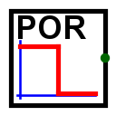
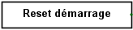

Reset à la mise sous tension
Reset à la mise sous tension
| Librairie : | Câblage |
| Introduction : | 2.14.6 |
| Apparence : |   |
Comportement
Le composant POR émet un signal selon la propriété Transition au démarrage de la simulation durant un délai défini par la propriété Temps Reset . Cela se passe soit à l'ouverture du projet par logisim soit quand on utilise le menu | Redémarer la simulation | ou encore si on utilise l'outil Pousser( ) sur le composant.
) sur le composant.
En mode pas-à-pas | Menu Simulation | → | Simulation pas-à-pas | la transition aura lieu après le délai, mais en synchronisation avec l'appui de la touche (Ctrl-I ).
Broches
Ce composant ne possède qu'une seule broche de un bit dont la valeur représentera l'état actuel du reset. L'emplacement de cette broche est spécifié dans l'attribut Orientation.
Attributs
Lorsque le composant est sélectionné ou ajouté, les touches fléchées modifient son attribut Orientation.
- Orientation
- Le côté du composant dessiné où doit se trouver sa broche de sortie.
- Format du dessins
- Permet de sélectionner différentes dimensions d'affichage de ce composant.
- Transistion
- Définis la transition (haut vers bas, Bas vers haut) après le temps règlé par la propriété Temps reset.
- Temps reset
- Le temps en seconde avant la transition du signal déterminée par la propriétée Transistion.
Comportement de l'outil pousser
L'outil pousser déclanche un reset d'une durée déterminée par la propriétée Temps reset.
Comportement de l'outil texte
Aucun.
Retour à Référence de la bibliothèque